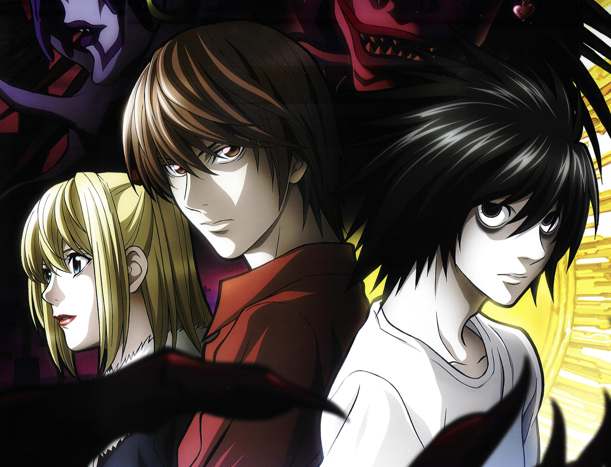
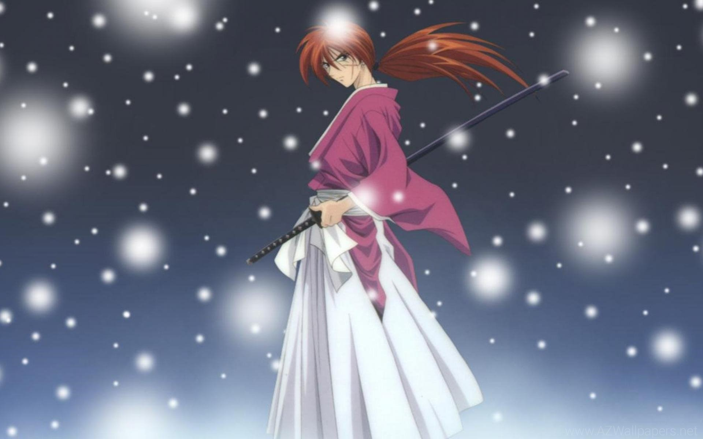

Dragon Ball Z
 Dragon Ball and Dragon Ball Z were originally published in 42 volumes (tankoubon) under the first name in Japan and most foreign countries.There are over 57 video games bearing the Dragon Ball Z name across a range of platforms from the Nintendo Entertainment System/Famicom to the current generation consoles. Also included are arcade games like Super Dragon Ball Z, which would eventually be ported to consoles.
Dragon Ball Z follows the adventures of the adult Goku who, along with his companions, defends the earth against an assortment of villains ranging from intergalactic space fighters and conquerors, unnaturally powerful androids and near indestructible magical creatures. While the original Dragon Ball anime followed Goku through childhood into adulthood, Dragon Ball Z is a continuation of his adulthood life, but at the same time parallels the maturation of his son, Gohan, as well as other characters from Dragon Ball and more. The separation between the series is also significant as the latter series takes on a more dramatic and serious tone. The anime also features characters, situations and back-stories not present in the original manga.
Dragon Ball and Dragon Ball Z were originally published in 42 volumes (tankoubon) under the first name in Japan and most foreign countries.There are over 57 video games bearing the Dragon Ball Z name across a range of platforms from the Nintendo Entertainment System/Famicom to the current generation consoles. Also included are arcade games like Super Dragon Ball Z, which would eventually be ported to consoles.
Dragon Ball Z follows the adventures of the adult Goku who, along with his companions, defends the earth against an assortment of villains ranging from intergalactic space fighters and conquerors, unnaturally powerful androids and near indestructible magical creatures. While the original Dragon Ball anime followed Goku through childhood into adulthood, Dragon Ball Z is a continuation of his adulthood life, but at the same time parallels the maturation of his son, Gohan, as well as other characters from Dragon Ball and more. The separation between the series is also significant as the latter series takes on a more dramatic and serious tone. The anime also features characters, situations and back-stories not present in the original manga.
Death Note
There are 12 books and even a secret 13th book known as Death Note.
Yagami Light is an ace student with great aspects who’s bored out of his mind. One day he finds the Death Note, a notebook held by a shinigami (Death God). With the Death Note in hand, Light decides to create a perfect world. A world without crime or criminals. However when criminals start dropping dead one by one, the authorities send the legendar… more Yagami Light is an ace student with great aspects who’s bored out of his mind. One day he finds the Death Note, a notebook held by a shinigami (Death God). With the Death Note in hand, Light decides to create a perfect world. A world without crime or criminals. However when criminals start dropping dead one by one, the authorities send the legendary detective L to track down the killer.
Rurouni Kenshin
Rurouni Kenshin Series 28 primary works • 37 total works Shonen Manga series by Nobuhiro Watsuki. The series is complete with 28 volumes.
Meiji Swordsman Romantic Story also known sometimes as Samurai X in the TV show, is a Japanese manga series written and illustrated by Nobuhiro Watsuki. The story begins during the 11th year of the Meiji period in Japan (1878) and follows a former assassin from the Bakumatsu, known as Hitokiri Battosai. After his work against the bakufu, Hitokiri Battosai disappears to become Himura Kenshin: a wandering swordsman who protects the people of Japan with a vow never to take another life.
One Piece
 The series currently consists of 901 Episodes (ongoing), 4 OVAs, 13 TV specials and 14 movies.
One Piece is a Japanese manga series written and illustrated by Eiichiro Oda. It has been serialized in Shueisha's Weekly Shōnen Jump magazine since July 1997, with its individual chapters compiled into 98 tankōbon volumes as of February 2021. The story follows the adventures of Monkey D. Luffy, a boy whose body gained the properties of rubber after unintentionally eating a Devil Fruit. With his crew of pirates, named the Straw Hat Pirates, Luffy explores the Grand Line in search of the world's ultimate treasure known as "One Piece" in order to become the next King of the Pirates.
The series currently consists of 901 Episodes (ongoing), 4 OVAs, 13 TV specials and 14 movies.
One Piece is a Japanese manga series written and illustrated by Eiichiro Oda. It has been serialized in Shueisha's Weekly Shōnen Jump magazine since July 1997, with its individual chapters compiled into 98 tankōbon volumes as of February 2021. The story follows the adventures of Monkey D. Luffy, a boy whose body gained the properties of rubber after unintentionally eating a Devil Fruit. With his crew of pirates, named the Straw Hat Pirates, Luffy explores the Grand Line in search of the world's ultimate treasure known as "One Piece" in order to become the next King of the Pirates.
Naruto
 The manga was also published in book form in Japan and other countries, releasing 72 volumes—27 for Part I, and the rest for Part II. The first 238 chapters are Part I and constitute the first section of the Naruto storyline. Chapters 239 to 244 include a gaiden (side-story) focusing on Kakashi Hatake's background. The remaining chapters (245 to 700) belong to Part II, which continues the story after a 2 1⁄2-year gap in the internal timeline.
Naruto is a Japanese manga series written and illustrated by Masashi Kishimoto. It tells the story of Naruto Uzumaki, a young ninja who seeks recognition from his peers and dreams of becoming the Hokage, the leader of his village. The story is told in two parts – the first set in Naruto's pre-teen years, and the second in his teens. The series is based on two one-shot manga by Kishimoto: Karakuri (1995), which earned Kishimoto an honorable mention in Shueisha's monthly Hop Step Award the following year, and Naruto (1997).
The manga was also published in book form in Japan and other countries, releasing 72 volumes—27 for Part I, and the rest for Part II. The first 238 chapters are Part I and constitute the first section of the Naruto storyline. Chapters 239 to 244 include a gaiden (side-story) focusing on Kakashi Hatake's background. The remaining chapters (245 to 700) belong to Part II, which continues the story after a 2 1⁄2-year gap in the internal timeline.
Naruto is a Japanese manga series written and illustrated by Masashi Kishimoto. It tells the story of Naruto Uzumaki, a young ninja who seeks recognition from his peers and dreams of becoming the Hokage, the leader of his village. The story is told in two parts – the first set in Naruto's pre-teen years, and the second in his teens. The series is based on two one-shot manga by Kishimoto: Karakuri (1995), which earned Kishimoto an honorable mention in Shueisha's monthly Hop Step Award the following year, and Naruto (1997).
 Though anime is enjoyed and watched globally, its roots find itself in Japan. By definition,
anime is simply Japanese animation created by computer or hand. Anime is often thought
to have originated in the early 20th century. The style of anime most people and familiar
with took off in the 1960s with one of Japan's most prominent anime artist, Osamu Tezuka,
and is leading the path for other artists to showcase their work domestically and internationally.
Though anime is enjoyed and watched globally, its roots find itself in Japan. By definition,
anime is simply Japanese animation created by computer or hand. Anime is often thought
to have originated in the early 20th century. The style of anime most people and familiar
with took off in the 1960s with one of Japan's most prominent anime artist, Osamu Tezuka,
and is leading the path for other artists to showcase their work domestically and internationally.